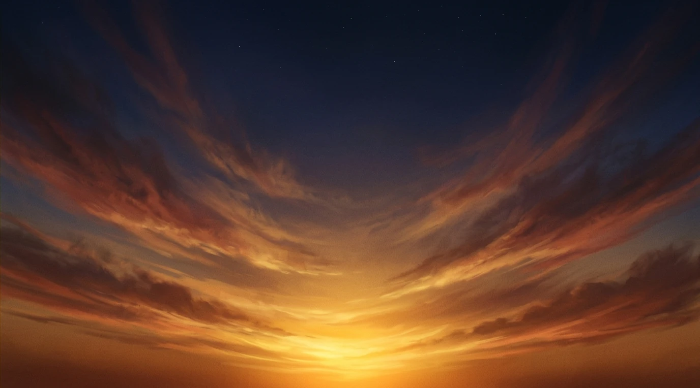
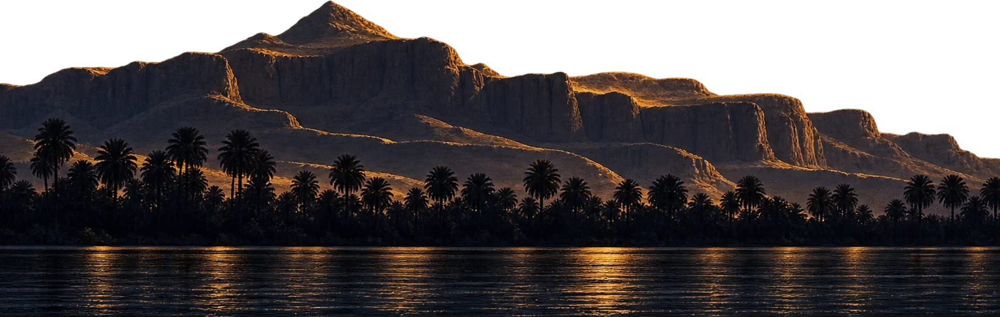
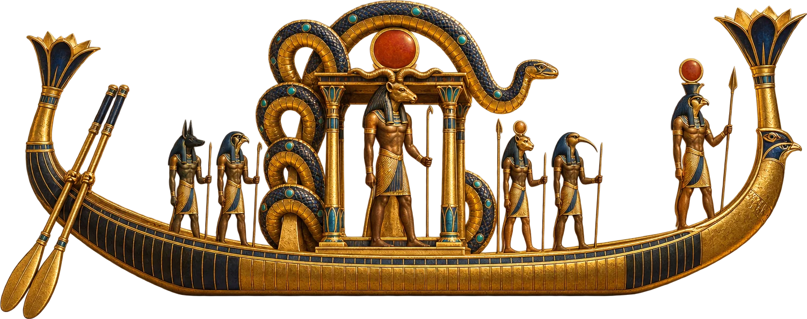
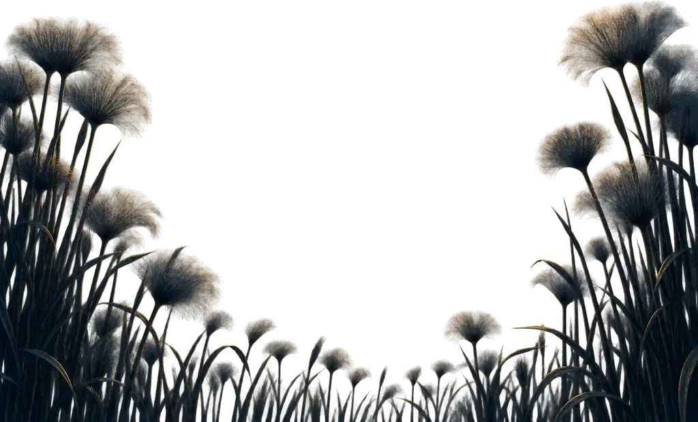
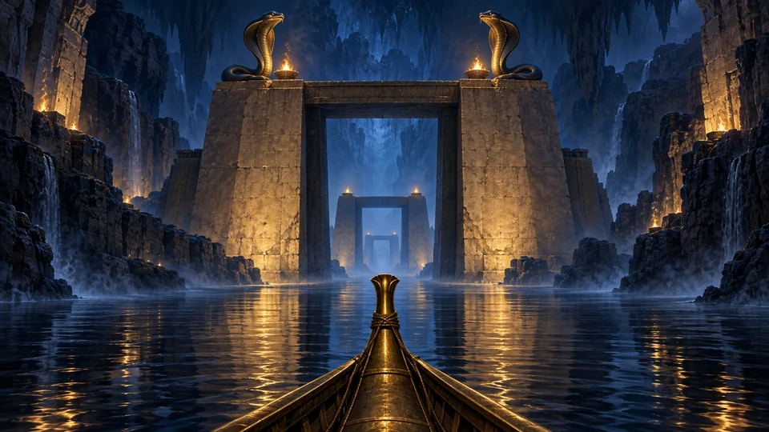
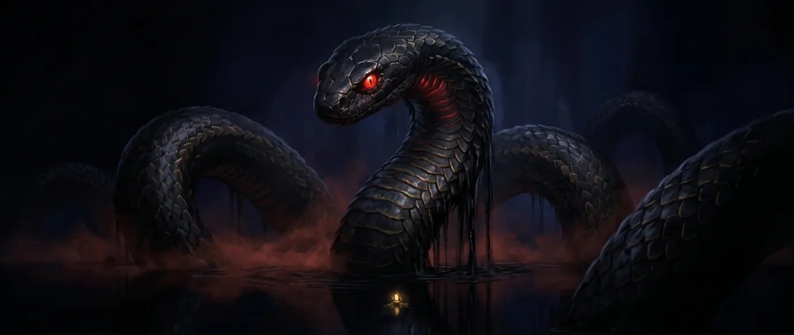
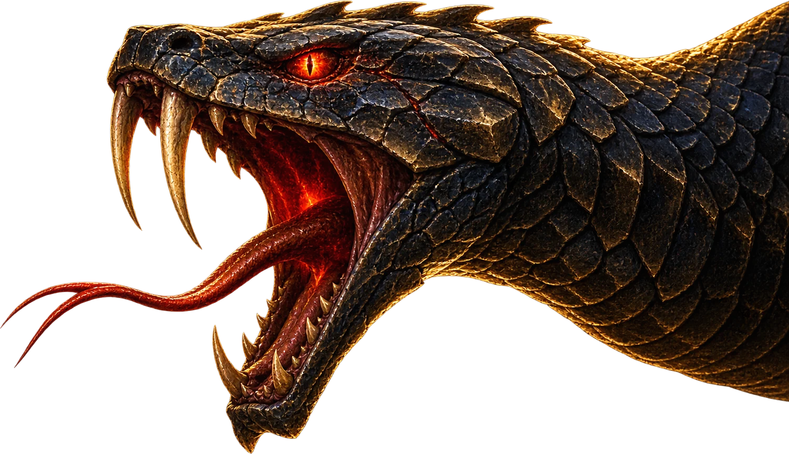
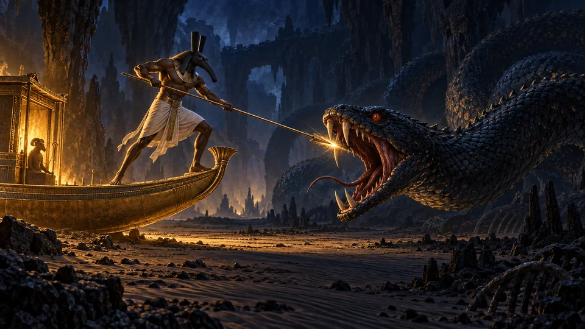
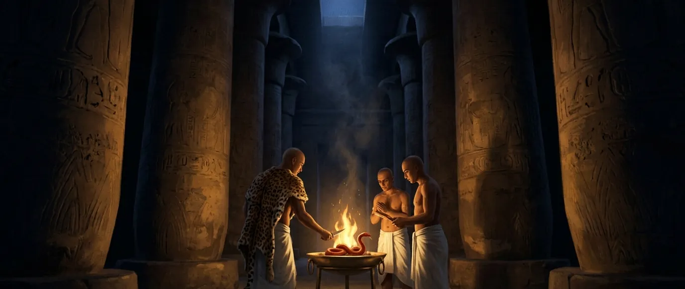
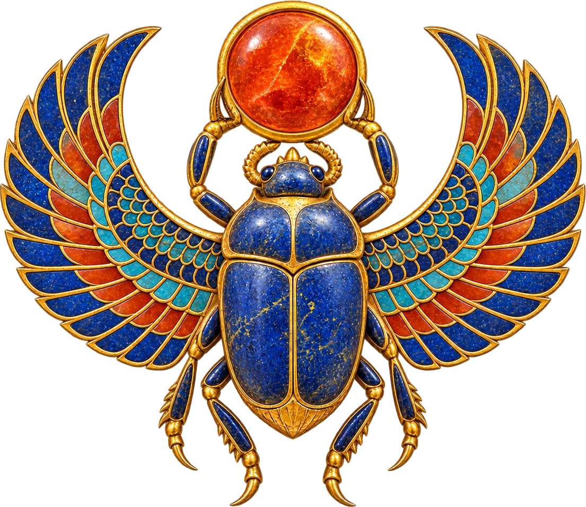

Ra & Apep
Soarele nu răsare pur și simplu. În fiecare noapte trebuie să învingă.
La orizontul de apus, soarele coboară sub lume.
Derulează ca să urmezi soarele
Ilustrație: o barcă aurie trece prin fața stâncilor din vestul Tebei, în timp ce un soare uriaș apune în spatele lor și apar primele stele.
Soarele este un călător
Pentru egipteni, soarele nu era un obiect. Era un zeu aflat la drum, iar călătoria lui avea un curs bine știut. În fiecare dimineață se năștea la orizontul de răsărit sub chipul lui Khepri, scarabeul care rostogolește pe cer soarele cel nou. La amiază domnea din înaltul cerului ca Ra, cu cap de șoim, încoronat cu discul solar. Spre seară era Atum: un bătrân sprijinit în toiag, coborând spre munții apusului.
Făcea traversarea cu barca, pentru că Egiptul era o țară cu un singur drum, iar drumul acela era un fluviu. Barca zilei se numea Mandjet, Barca Milioanelor de Ani. La orizont o părăsea pentru o a doua ambarcațiune, Mesektet, barca nopții.
O a doua barcă, fiindcă drumul nu se sfârșea la apus. Continua pe sub lume, de la vest înapoi spre est, printr-o țară pe care niciun om viu n-o văzuse. Tot ce era cu adevărat important în povestea soarelui se petrecea acolo, în întuneric, în timp ce Egiptul dormea.
Ra rꜥ Cuvântul înseamnă pur și simplu „soare” în egipteană. Ultimul semn este zeul însuși: o figură așezată, cu cap de șoim, purtând discul.

Duatul
Egiptenii numeau țara de sub lume Duat. Nu era un iad, ci un ținut cu propria geografie: o vale lungă străbătută de un fluviu, cu maluri, câmpuri și caverne, locuită de zei, de morții cei fericiți și de făpturi care, la lumina zilei, nu aveau nume.
Noaptea era împărțită în douăsprezece ceasuri, iar fiecare ceas era un ținut cu poarta lui. Fiecare poartă își avea paznicii, iar paznicii trebuiau chemați pe nume înainte să lase barca să treacă. În mormintele regale din Valea Regilor, întreaga călătorie e pictată de-a lungul pereților, ceas cu ceas, în cărți pe care egiptenii le numeau Ceea ce se află în Duat și Cartea Porților. Sunt hărți. După moarte, regele urma să facă el însuși drumul, ca membru al echipajului soarelui.
Intrând, Ra se schimbă. În morminte, soarele nopții e desenat cu cap de berbec și însoțit de un singur cuvânt: Carne. Acum e doar un trup, lipsit de lumina lui, și trebuie purtat. Un șarpe uriaș, pe nume Mehen, își petrece inelele în jurul cabinei ca s-o apere. Nu orice șarpe de aici, din adâncuri, e un dușman.
La trecerea bărcii, morții de pe maluri se trezesc. Cât ține un ceas, au lumină, și aer, și glasul zeului lor. Când barca merge mai departe, se culcă la loc, iar textele spun că în urma ei, în întuneric, li se aude bocetul.
Ceasul al șaselea
La miezul nopții, barca ajunge în cel mai adânc loc din câte există. Aici, în adâncul nopții, zace un trup fără viață: trupul lui Osiris, stăpânul morților. Este totodată, după cum subliniază textele, trupul soarelui.
Ra și Osiris se întâlnesc și devin, pentru o clipă, un singur zeu. Trupul mort primește un suflet; sufletul istovit primește un trup. Aceasta e taina pentru care există întreaga călătorie: soarele cel bătrân, înnoit în întuneric, ca o sămânță.
Este și clipa celei mai mari primejdii. Ceva, în Duat, a așteptat tocmai acest moment.


Apep
Numele lui era Apep; grecii l-au scris Apophis. Textele din morminte îl mai numesc și Cel cu Fața Cumplită. Era un șarpe, iar textele abia găsesc cuvinte pentru mărimea lui: bancul de nisip pe care zace în Duat are patru sute cincizeci de coți lungime, adică mult peste două sute de metri, și inelele lui îl umplu în întregime. Nu avea temple și nu avea preoți. În toată istoria Egiptului, nimeni nu i-a adus vreo ofrandă. Nu ocrotea nimic. Era dușmanul a tot ce există.
Egiptenii aveau un cuvânt pentru ceea ce întruchipa el: isfet. Dezordine, minciună, destrămarea lucrurilor. La polul opus se afla maat – adevărul, echilibrul, lumea așa cum s-ar cuveni să fie – iar călătoria lui Ra păstra această rânduială. Apep voia un singur lucru: să oprească barca. Dacă barca se oprea, soarele nu mai răsărea. Iar dacă soarele nu mai răsărea, nu mai existau nici zile, nici o lume care să le cunoască.
Avea arme. Răgetul lui se rostogolea prin lumea de dincolo ca un tunet. Privirea lui putea țintui locului întregul echipaj, cu zei cu tot, care îl priveau la rândul lor, încremeniți, în timp ce barca plutea în derivă. Iar în al șaptelea ceas al nopții făcea lucrul cel mai simplu și mai cumplit care îi stătea în putere. Căsca gura și bea fluviul. Barca soarelui eșua pe un banc de nisip, în beznă, cu inelele șarpelui ridicându-se de jur împrejur.
Apep ꜥꜣpp Numele lui apare prima oară în jurul anului 2100 î.Hr., când piramidele aveau deja câteva secole. Scribii desenau adesea șarpele de la sfârșitul cuvântului cu cuțitele gata înfipte în el, pentru ca nici măcar cuvântul scris să nu poată face rău.

Ceasul al șaptelea
-
Aici se hotărăște soarta nopții. Zeul soarelui nu luptă singur, iar cel mai bun luptător al lui e ultimul zeu în care ar avea cineva încredere.
-
Seth
La proră stă Seth: zeul furtunilor și al deșertului, ucigașul lui Osiris, însăși întruchiparea violenței. Este și singurul din echipaj pe care privirea șarpelui nu-l poate frânge. În fiecare noapte își înfige bine picioarele în punte și împlântă o suliță în trupul lui Apep. E cel mai bun lucru pe care îl face vreodată.
-
Isis
În spatele lui, Isis vorbește. Ale ei sunt cuvintele puterii, iar cuvintele își fac lucrarea. Puterea se scurge din șarpe, iar barca eșuată începe să înainteze pe albia secată, trasă numai de magie.
-
Serket
Serket, zeița-scorpion, îi aruncă șarpelui lațul peste cap și îl strânge. Alții vin cu cuțitele. În morminte, Apep e pictat gata ciopârțit, cu câte o lamă înfiptă în fiecare inel: o imagine făcută anume ca să se adeverească.
-
Mehen
În jurul cabinei, Mehen își strânge propriile inele. Un șarpe pus împotriva altui șarpe: un zid de solzi vii între dușman și Carnea fără apărare.
-
Marele Motan
Iar în cărțile de descântece ale morților, Ra luptă el însuși. Ia chipul unui motan uriaș, sub arborele sfânt ished din Heliopolis, țintuiește șarpele sub o labă și îi retează capul cu cuțitul.
-
Înving. Înving de fiecare dată. Și nu e niciodată de ajuns, pentru că Apep nu poate muri. Haosul nu e genul de lucru care moare. Până mâine noapte e din nou întreg și așteaptă, în al șaptelea ceas.

Între timp, pe pământ
Egiptenii n-au lăsat lupta aceasta doar în seama zeilor. Dacă supraviețuirea soarelui era nesigură în fiecare noapte, atunci lupta îi privea pe toți.
Un papirus aflat astăzi la British Museum păstrează o slujbă de templu numită Cartea doborârii lui Apep. Potrivit papirusului, se oficia zi de zi în templul lui Amon-Ra de la Karnak, iar îndrumările ei sunt cât se poate de directe. Fă un șarpe din ceară. Scrie-i numele pe el cu cerneală verde. Apoi fă-i cerii ce îi fac zeii șarpelui în Duat. Capitolele cărții sunt chiar lista ei de porunci:
- Scuiparea asupra lui Apep
- Pângărirea lui Apep cu piciorul stâng
- Luarea lăncii pentru a-l lovi pe Apep
- Ferecarea lui Apep
- Luarea cuțitului pentru a-l lovi pe Apep
- Arderea lui Apep
Uneori primejdia se făcea văzută. O furtună care întuneca cerul în plină amiază, pământul cutremurându-se, o beznă bruscă în miezul zilei: acestea erau ceasurile în care Apep câștiga. Atunci templul își aduna toate puterile pentru ritual și, mai devreme sau mai târziu, lumina se întorcea. Se întorcea de fiecare dată. Pentru egipteni, aceasta era dovada că ritualul își făcea efectul.
Ceasul din urmă
În ultimul ceas al nopții, barca ajunge la încă un șarpe: un aliat, uriaș, al cărui nume înseamnă Viața Zeilor. Echipajul apucă funia de remorcare și trage barca înăuntrul lui, intrând pe la coadă. Textele spun că soarele și toți cei care îl însoțesc intră bătrâni și cărunți și ies pe gură ca niște prunci nou-născuți.
Apoi poarta de răsărit stă deschisă. Khepri, scarabeul, pune umărul și rostogolește soarele cel tânăr peste marginea lumii. Shu, văzduhul, îl ridică deasupra ei. Pe ogoarele de lângă fluviu, cineva ridică ochii și vede o dimineață obișnuită.

N-a fost niciodată obișnuită. A fost câștigată.
Ilustrație: soarele răsare peste stâncile de la răsărit, ridicat de Khepri, un scarabeu înaripat din aur și lapislazuli, iar cerul nopții se preschimbă în zi.
Ce spune povestea
Cele mai multe mitologii își așază marea bătălie la începutul timpului sau la sfârșitul lui. Egiptul a așezat-o în mijlocul fiecărei nopți. Creația nu era un act încheiat. Lumea era un loc mic și luminat, cu haosul de jur împrejur, iar ordinea nu era starea firească a lucrurilor. Trebuia făcută din nou în fiecare zi, de zei și de oameni, împotriva unui dușman care putea fi învins, dar niciodată ucis.
E un gând mai greu de acceptat și mai actual decât pare. Nimic bun nu durează de la sine. Tot ce merită păstrat trebuie îngrijit, zi de zi. Soarele a răsărit în dimineața aceasta, iar undeva sub orizont șarpele e deja din nou întreg.
Nume și înțelesuri
- Ra rꜥ
- Soarele și zeul care îl întruchipează.
- Apep ꜥꜣpp
- Șarpele haosului. Apophis, la greci.
- Duat dwꜣt
- Țara de sub lume. Un singur semn: o stea într-un cerc.
- Maat mꜣꜥt
- Adevăr, echilibru, rânduiala dreaptă; și o zeiță, care poartă o pană.
- Isfet jzft
- Dezordine și strâmbătate. Se încheie cu vrabia, semnul pe care scribii îl puneau pe lucrurile rele.
- Khepri ḫprj
- Scarabeul; soarele la răsărit. Numele lui înseamnă „cel care ia ființă”.
- Mehen mḥn
- „Cel încolăcit”, șarpele care păzește cabina.
- Seth stš
- Furtună, deșert, violență; sulițașul de la proră.
Aici semnele sunt așezate în rând. Un scrib le-ar fi grupat în pătrate ordonate.
De unde știm
- Amduat, „Ceea ce se află în Duat”: cele douăsprezece ceasuri, Carnea cu cap de berbec, unirea din ceasul al șaselea, bancul de nisip din ceasul al șaptelea, șarpele din al doisprezecelea. Prima versiune completă se află în mormântul lui Tutmes al III-lea, în jurul anului 1425 î.Hr.
- Cartea Porților: porțile și paznicii lor, Mehen în jurul cabinei.
- Cartea Morților, capitolul 17: Marele Motan și arborele ished.
- Papirusul Bremner-Rhind (British Museum EA 10188): Cartea doborârii lui Apep.
- Erik Hornung, The Ancient Egyptian Books of the Afterlife (1999); R. O. Faulkner, “The Bremner-Rhind Papyrus III”, Journal of Egyptian Archaeology 23 (1937); Geraldine Pinch, Egyptian Mythology (2002); Richard H. Wilkinson, The Complete Gods and Goddesses of Ancient Egypt (2003).
Despre imagini
Toate ilustrațiile de pe această pagină au fost generate cu inteligență artificială, anume pentru acest proiect. Modelul de imagine al OpenAI a creat scenele Duatului și ale bătăliei, precum și figurile decupate; Gemini, modelul Google, a creat celelalte scene pictate. Sunt interpretări artistice, nu artefacte antice. Hieroglifele de mai sus sunt semne autentice, redate ca text.